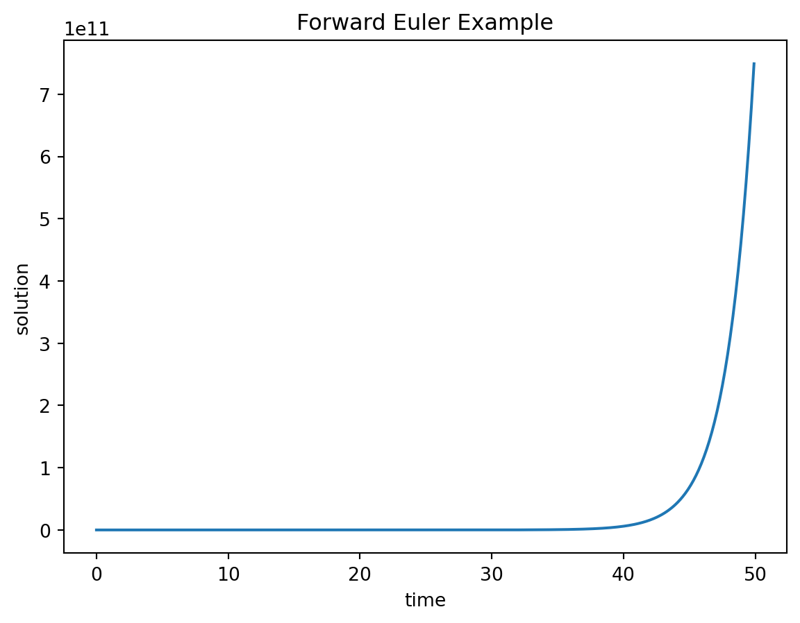
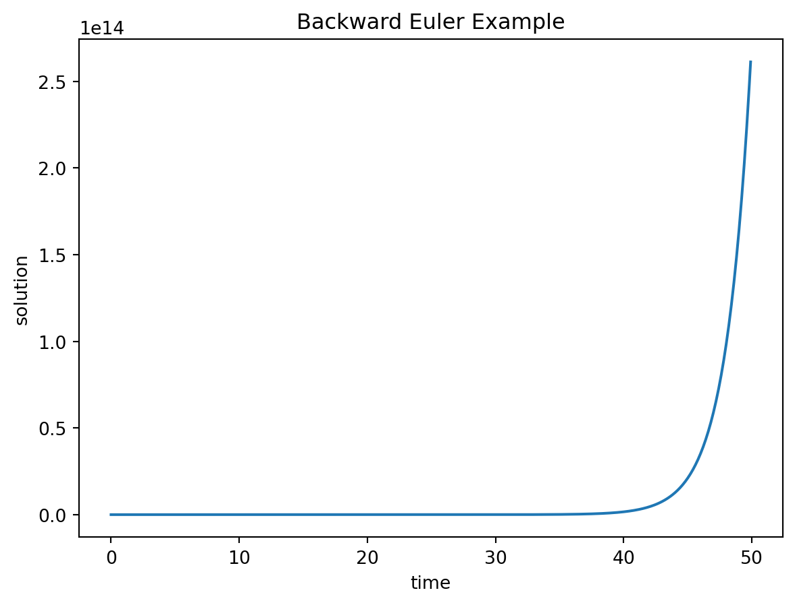

#Necessary imports
import numpy as np #package for work with arrays and matrices
import matplotlib.pyplot as plt #package with plotting capabilities8 Numeric solutions of ODEs
Analytic solutions are very useful for a modeler because they allow prediction of the variable of interest at any time in the future. However, for many differential equations they are not easy to find, and for many others they simply cannot be written down in a symbolic form. Instead, one can use a numeric approach, which does not require an exact formula for the solution. The idea is to start at a given initial value (e.g. \(x(0)\)) and use the derivative from the ODE (e.g. \(dx/dt\)) as the rate of change of the solution (e.g. \(x(t)\)) to calculate the change or increment for the solution over a time step. Essentially, this means replacing the continuous change of the derivative with a discrete time step, thus converting the differential equation into a difference equation and then solving it. The solution of the difference equation is not the same as the solution of the ODE, so numeric solutions of ODEs are always approximate. I will use the notation \(\hat x(t)\) to denote the numeric solution to distinguish it from the exact solution \(x(t)\). The fundamental difference between them is that \(\hat x(t)\) is not a formula that can be evaluated at any point in time, but instead is a sequence of numbers calculated every time step, which hopefully are close to the exact solution \(x(t)\).
8.0.1 Forward Euler method
Let us introduce all the players: first, we need to pick the time step \(\Delta t\), which is the length of time between successive values of \(\hat x\). In the difference equation notation one can use \(\hat x_i\) to mean \(\hat x(i\Delta t)\), the value of the numeric solution after \(i\) time steps. Then we need to calculate the derivative, or the rate of change at a particular point in time. For any first-order ODE of the form
\[ \frac{d x} {dt} = \dot x = f(x,t) \]
the rate of change depends (potentially) on the values of \(x\) and \(t\). This rate of change based on the numeric solution after \(i\) time steps is \(f(\hat x(i\Delta t), i\Delta t) = f(\hat x_i, t_i)\). Finally, to calculate the change of the dependent variable we need to multiply the rate of change by the time step. This should make sense in a practical context: if you drive for two hours (time step) at 60 miles per hour (rate of change), the total distance (increment) is \(2*60=120\) miles. By the same token, we can write down how to calculate the next value of the numeric solution \(y_{i+1}\) based on the previous one:
\[ \hat x_{i+1} = \hat x_i + \Delta t f(\hat x_i, t_i) \label{eq:ch15_FE} \]
This method of computing a numeric solution of an ODE is called the Forward Euler method, after the famous mathematician who first came up with it. It is called a forward method because it uses the value of the dependent variable and its derivative at time step \(i\) to predict the value at the next time step \(i+1\). The method is iterative, so it needs to be repeated in order to calculate a set of values of the approximate solution \(y(t)\). Here are a couple of simple examples of computing numeric solution using FE:
Example. Let us numerically solve the ODE \(\dot x = -0.1\) using the Forward Euler method. This means the defining function in the formulation of FE above is \(f(x,t)=-0.1\). We can calculate the numeric solution for a couple of steps and compare the values with the exact solution, since we now know that it is \(x(t) = x_0 -0.1t\). Let us pick the time step \(\Delta t = 0.2\) and begin with the initial value \(x(0)=1\). Here are the first three steps using the FE method:
\[ \begin{aligned} \hat x(0.2) &=& \hat x(0) + \Delta t f(\hat x(0)) = 1 + 0.2 \times (-0.1) &=& 0.98 \\ \hat x(0.4) &=& \hat x(0.2) + \Delta t f(\hat x0.2)) = 0.98+ 0.2 \times (-0.1) &=& 0.96 \\ \hat x(0.6) &=& \hat x(0.4) + \Delta t f(\hat x(0.4)) = 0.96+ 0.2\times (-0.1) &=&0.94 \end{aligned} \]
Since the rate of change in this ODE is constant, the solution declines by the same amount every time step. In this case, the numeric solution is actually exact and perfectly matches the analytic solution.
Example. Let us numerically solve the ODE \(\dot x = -0.1x\) using the Forward Euler method. This means the defining function in the formulation of FE above is \(f(x,t)=-0.1x\). We can calculate the numeric solution for a couple of steps and compare the values with the exact solution, since we now know that it is \(x(t) = x_0 e^{-0.1t}\). Let us pick the time step \(\Delta t = 0.2\) and begin with the initial value \(x(0)=100\). Here are the first three steps using the FE method:
\[ \begin{aligned} \hat x(0.2) &=& \hat x(0) + \Delta t f(\hat x(0)) = 100 + 0.2\times (-0.1*100) &=& 98 \\ \hat x(0.4) &=& \hat x(0.2) + \Delta t f(\hat x(0.2)) = 98+ 0.2\times (-0.1*98) &=& 96.04 \\ \hat x(0.6) &=& \hat x(0.4) + \Delta t f(\hat x(0.4)) = 96.04+ 0.2\times (-0.1*96.04) &=& \approx 94.12 \end{aligned} \]
In this case, the derivative is not constant and the numeric solution is not exact. The error in the numeric solution grows with time, which may be problematic. We will further investigate how to implement the computation of numeric solutions using R in the next section.
8.0.2 Error in numeric solutions
One of the main concerns of numerical analysis is to minimize the difference between the exact solution and the numeric solution, which is known as the error. There are at least two distinct sources of error in numeric solutions: a) roundoff error and b) truncation error. Roundoff error is caused by computers representing real numbers by a finite string of bits on a computer using what is known as a floating point representation. In many programming languages variables storing real numbers can be single or double precision, which typically support 24 and 53 significant binary digits, respectively. Any arithmetic operation involving floating point numbers is only approximate, with an error that depends on the way the numbers are stored in the memory. Truncation error is caused by approximations inherent in numeric algorithms. The most common class of numeric approximations for ODEs is known as finite difference methods, and Forward Euler is a very simple representative of that class. As the name suggests, these methods use difference equations to approximate a differential equation. There is inevitably a truncation error in such methods because they use a more or less clever scheme to approximate the instantaneous rate of change in an ODE, which can be thought as a truncation of the Taylor series after certain term.
A modeler has different controls over the roundoff error and truncation error. The first can be minimized by using more memory to store the numbers, e.g. by using double precision format for the variables. Further, there are techniques for minimizing the so-called loss of significance that occurs in certain arithmetic operations, like subtraction of two similar numbers. We will leave these considerations to numerical analysts (press_numerical_2007?); for the most part, roundoff error is not a significant issue on modern computers. Truncation error, however, is much more within our control, because it depends on the choice of the numerical algorithm. One can decrease the error in the case of finite difference methods by choosing smaller time steps, or by choosing an algorithm with a higher order of accuracy.
Returning specifically to the Forward Euler method, it is called a first-order method because the total error of the solution (after some number of time steps) depends linearly on the time step \(\Delta t\). One can show this by using the Taylor expansion of the solution \(\hat x(t)\) to derive the forward Euler method, with \(\tau(\Delta t)\) representing the truncation error after one time step:
\[ \hat x(t+\Delta t) = \hat x(t) + \Delta t \frac{d\hat x(t)}{dt} + \tau(\Delta t) \]
As you might have learned in calculus, the error remaining after the linear term in the Taylor series is proportional to the the square of the small deviation \(\Delta t\). This only describes the error after 1 time step, but since the errors accumulate every time step, the total error after \(n\) time steps accumulates \(n \tau(\Delta t)\). As we saw in the implementation above, for a given length of time, \(n\) is inversely proportional to \(\Delta t\). Therefore, the total error is proportional to the \(\Delta t\) and so FE is a first-order method.
The exercise above shows that new errors in FE method accumulate in proportion with the time step. The next question is, what happens to these errors over time? Do they grow or dissipate with more iterations? This is known as the stability of a numerical method, and unlike the above question about the order of accuracy, the answer depends on the particular ODE that one needs to solve. Below I show an example of error analysis for a linear ODE:
Generally speaking, however, Forward Euler is about the worst method to use for practical numeric solutions of ODEs, due to its low accuracy and to its lack of stability under certain conditions.
8.0.3 Backward Euler method
More sophisticated numeric methods generally offer better stability than Forward Euler. For instance, there is a class of methods called implicit schemes which rely on evaluating the value of the derivative of \(x\) at a future time point. This may seem impossible, since we do not yet have the value of the dependent variable \(x\) in the future, only in the present. In fact, we can set up an algebraic relationship between the present value of \(x\), the future value of \(x\), and the derivative of \(x\) in the future. Then, depending on the form of the defining function \(f(x)\), we may solve this relationship for the value of \(x\) at the future time.
To make the idea of implicit methods concrete, we will introduce a simple method called the Backward Euler. As suggested by the name, this method is essentially similar to the Forward Euler, but with the future value of \(x_{i+1}\) substituted in the defining function instead of the current value:
\[ \hat x_{i+1} = \hat x_i + \Delta t \frac {d\hat x_{i+1}}{dt} = \hat x_i + \Delta t f(\hat x_{i+1}) \]
How can we calculate the value of \(f(\hat x_{i+1})\) if you don’t know \(\hat x_{i+1}\)? Depending on the form of \(f(x)\), it may be possible to algebraically solve for \(\hat x_{i+1}\). If we can solve the implicit expression for \(y_{i+1}\), we can program a numeric scheme that will compute the value \(\hat x_{i+1}\) directly from \(\hat x_i\). In other situations, the implicit expression may be impossible to solve algebraically. The practitioner may then use a method for solving such an expression numerically, using a numerical root-finding algorithm such as Newton’s method that we will see later in this course.
8.1 Implementation in Python
8.1.1 Forward Euler
We defined the Forward Euler method in the section above, and now we will implement is as a computational algorithm. Like any algorithm, one needs to be clear about its inputs and outputs. In this case, the inputs are the defining function \(f(x,t)\), the initial value, the time step, and the total time. The output is the solution vector \(y\), which contains a sequence of values that approximate the solution of the ODE, along with the vector of time values spaced by the time step. Notice that it is very similar to the script for numeric solution of a difference equation we saw in chapter 1 with the major difference being the presence of a time step, whereas in difference equations the time step is aways 1. There is one more important point for the implementation: usually one needs to solve the ODE for a particular length of time \(T\) with a specified time step \(\Delta t\) . This dictates that the required number of iterations be \(T/\Delta t\); in other words, for a given time period the number of time steps is inversely proportional to the time step.
Below we implement the Forward Euler method to solve the linear ODE
\[ dx/dt = r*x \]
#Implementation of Forward Euler method to solve dx/dt = r*x
dt = 0.1 #set the time step
T = 50 #set the time duration
Niter = int(np.ceil(T/dt)) #determine the number of iterations
P = np.zeros(Niter) #preallocate the solution array
P[0] = 20 #set the initial value
t = np.arange(0,T,dt) #preallocate the time array
r = 0.5 #set the growth rate
#Do the Euler!
for i in np.arange(Niter-1):
P[i+1] = P[i] + dt*r*P[i] #this is the FE step
plt.plot(t,P)
plt.xlabel('time')
plt.ylabel('solution')
plt.title('Forward Euler Example')
plt.show()
The plot should look like an exponential curve, which seems reasonable, but how accurate is it? Remember from the reading that we can define the error of FE at each point, \(t\), as \(|x(t)- \hat x(t)|=\epsilon(t)\). Also, we can define the algorithm as stable if the error at some point, \(t\), does not grow so that \(\left|x(t+1)- \hat x(t+1)\right| \leq \epsilon(t)\), where \(x(t)\) is the exact solution.
8.1.2 Backward Euler
Now we’ll turn to the second method introduced above, Backward Euler (BE). This time, instead of evaluating \(f(x,t)\) at the present time for finding the future point, we use the future point itself! In order to do this, we set up an algebraic relationship between the present value, the future value, and the derivative of the future value such that
\[ \hat x(t+\Delta t) = \hat x(t) + dt*f(\hat x(t+\Delta t)) + \epsilon(t) \]
Then, we must solve for \(\hat x(t+\Delta t)\). Sometimes this will be impossible to do algebraically, but it may be possible to solve the equation numerically. Once we solve for \(x(t+1)\), the steps for implementing the algorithm are similar to the ones for Forward Euler:
Below is an implementation of the Backward Euler scheme for the generic linear ODE:
#Implementation of Backward Euler method to solve dx/dt = r*x
dt = 0.1 #set the time step
T = 50 #set the time duration
Niter = int(np.ceil(T/dt)) #determine the number of iterations
x = np.zeros(Niter) #preallocate the solution array
x[0] = 2000 #set the initial value
t = np.zeros(Niter) #preallocate the time array
r = 0.5 #set the growth rate
#Do the Euler!
for i in range(Niter-1):
x[i+1] = x[i]/(1-r*dt) #this is the BE step
t[i+1] = t[i] + dt #add the current time to the time vector
plt.plot(t,x)
plt.xlabel('time')
plt.ylabel('solution')
plt.title('Backward Euler Example')
plt.show() 